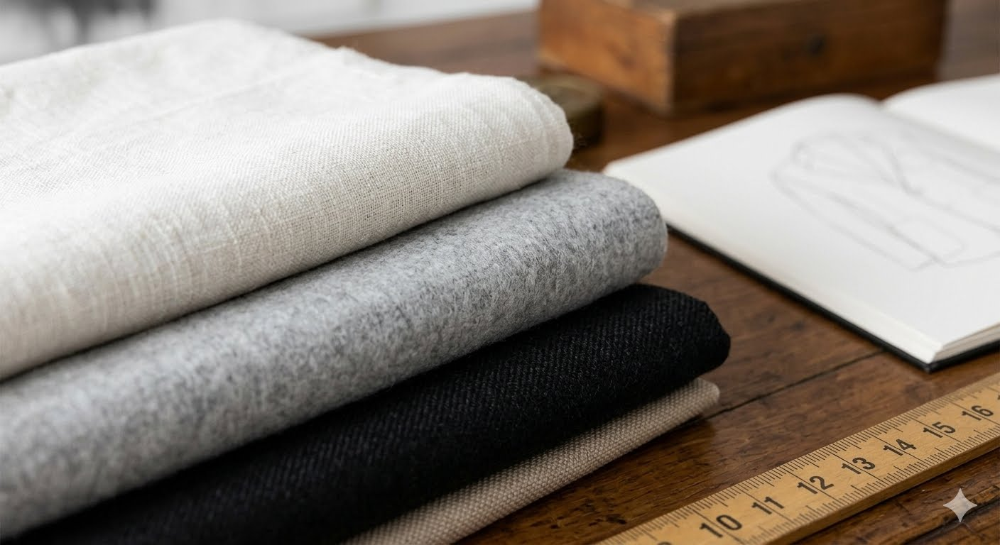
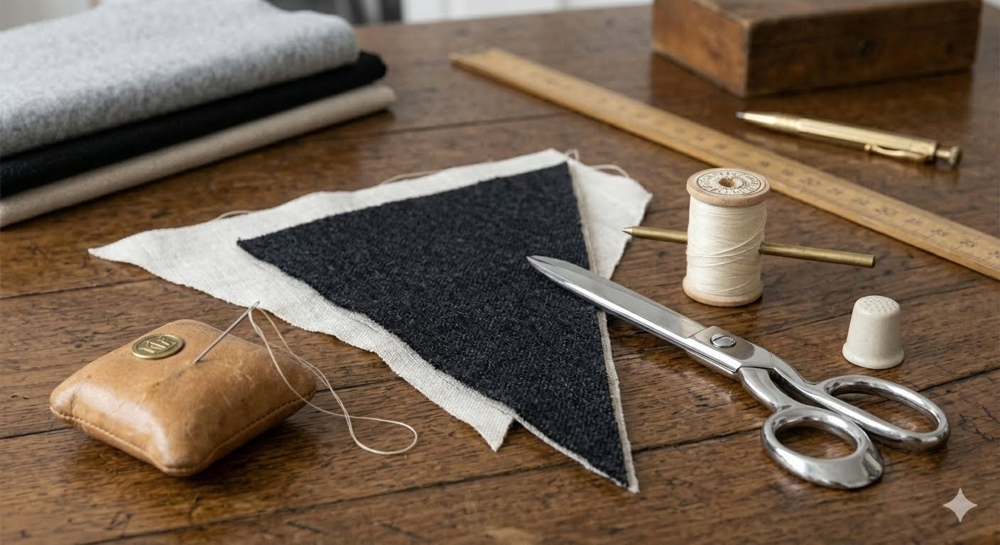

01 / ORIGEN
Nuestra Historia
Nacimos bajo la premisa de fusionar la delicadeza y la resistencia. Loto Tigre no es solo moda, es un manifiesto de identidad para quienes encuentran equilibrio en los contrastes de la vida urbana.

02 / CONCEPTO
La Inspiración
Nos inspiramos en la geometría de la arquitectura moderna y en la fluidez de la naturaleza. Cada prenda está diseñada para adaptarse al movimiento, utilizando siluetas contemporáneas y cortes limpios.

03 / ESTÉTICA
Nuestra Paleta
Colores sobrios que trascienden las temporadas y facilitan un armario funcional.
#111111
Negro Absoluto
#E5E5E5
Gris Urbano
#D4AF37
Oro Loto